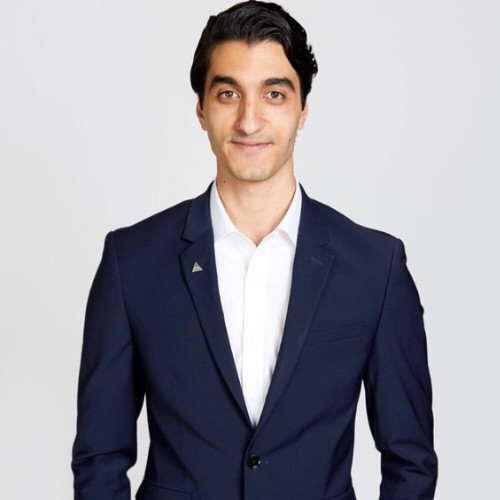

About Me
My name is Mohamed Hourri, and I am a highly motivated and goal-oriented professional with a background in sales and operations management. Currently serving as a Sales and Ops Manager at the Aldo Group, I have gained six years of valuable experience in the retail industry. However, driven by my passion for technology and a desire to pursue a new career path, I am transitioning to become a full stack developer.
To support my career transition, I am currently enrolled in a rigorous web development bootcamp course, where I am expanding my knowledge and honing my skills in full stack web development. I am on track to graduate in August of this year and concurrently studying for a full stack web development certification. Throughout my career, I have consistently demonstrated my ability to solve problems while maintaining a positive and proactive approach. I thrive in dynamic and fast-paced environments, where I can leverage my strong interpersonal and communication skills to build effective relationships with clients and team members. In addition to my professional endeavors, I am committed to continuous learning and improvement. I have a high school diploma and actively seek opportunities to expand my knowledge in the ever-evolving field of web development. With a diverse background spanning restoration, retail, sales, and now transitioning to the IT industry, I bring a unique perspective and adaptability to my work. My versatile skill set, coupled with my determination and drive, positions me well for success as a full stack developer.
Outside of work, I enjoy exploring new technologies, participating in coding challenges, and staying updated on the latest industry trends. My dedication to personal growth is reflected in my volunteer work, where I actively contribute to local community projects aimed at promoting digital literacy. As I embark on this exciting new chapter in my career, I am eager to leverage my past experiences and combine them with my newfound expertise in web development to make a meaningful impact in the IT industry.
Connect with Me